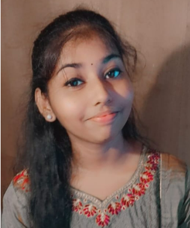
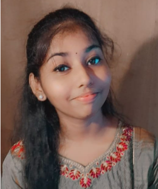

|  |
Kiruthiga sri DAn enthusiastic and highly flexible person. Having the significant ability to work in teams.
|
|  |
Kiruthiga sri DAn enthusiastic and highly flexible person. Having the significant ability to work in teams.
|
Vellore Institute Of Technology
Higher Secondary SchoolSita devi garodia hindu vidyalaya matriculation higher secondary school
Mentor
Bharatha Nrithya Mandali
Certificate Of Merit in Social Science in SSLC Exam (03/2019)
Certificate Of Proficiency in the Art (07/2019)
Professional Working Proficiency
Native or Bilingual Proficiency
Elementary Proficiency